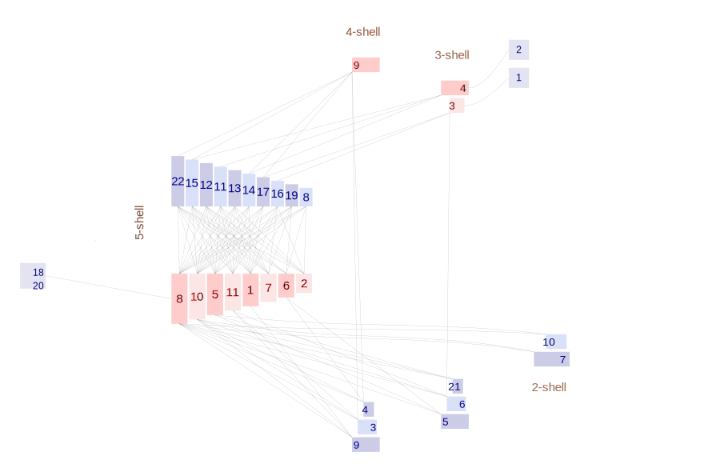

|  |
Hadfield JD, Krasnov BR, Poulin R, Shinichi N (2013) A tale of two phylogenies: comparative analyses of ecological interactions. The American Naturalist 183(2): 174-187 Guriev |
|
| Parasite |
| 1 Amphipsylla kalabukhovi | | 2 Amphipsylla schelkovnikovi | | 3 Citellophilus tesquorum | | 4 Citellophilus trispinus | | 5 Coptopsylla lamellifer | | 6 Ctenophthalmus breviatus | | 7 Ctenophthalmus dolichus | | 8 Echidnophaga oschanini | | 9 Frontopsylla semura | | 10 Leptopsylla segnis | | 11 Mesopsylla hebes | | 12 Mesopsylla lenis | | 13 Mesopsylla tuschkan | | 14 Neopsylla setosa | | 15 Nosopsyllus laeviceps | | 16 Ophthalmopsylla volgensis | | 17 Oropsylla ilovaiskii | | 18 Paradoxopsyllus repandus | | 19 Rhadinopsylla cedestis | | 20 Stenoponia conspecta | | 21 Xenopsylla conformis | | 22 Xenopsylla skrjabini |
|
| Host |
| 1 Allactaga elater | | 2 Allactaga major | | 3 Allocricetulus eversmanni | | 4 Cricetulus migratorius | | 5 Meriones meridianus | | 6 Meriones tamariscinus | | 7 Pygeretmus pumilio | | 8 Rhombomys opimus | | 9 Spermophilus fulvus | | 10 Spermophilus pygmaeus | | 11 Stylodipus telum |
|
|